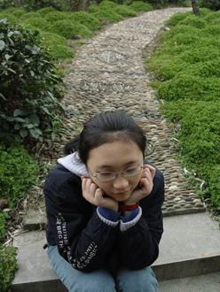
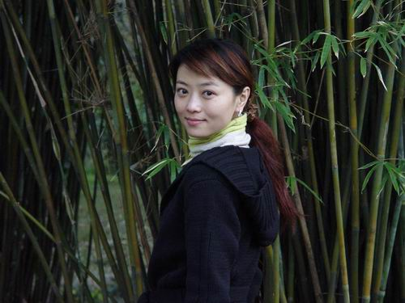
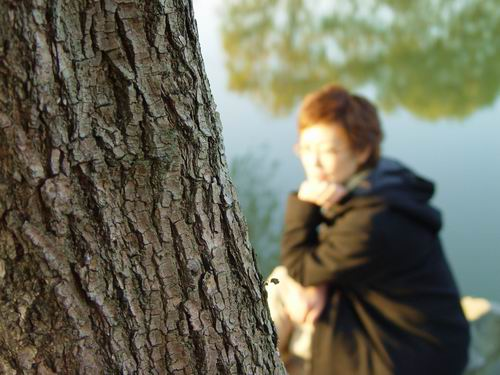
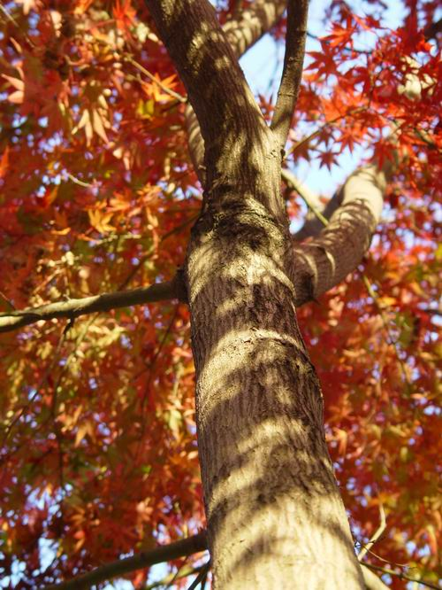
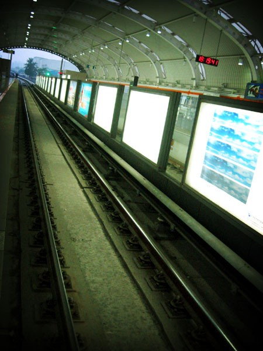
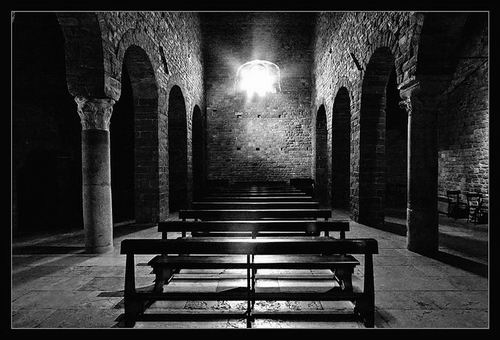
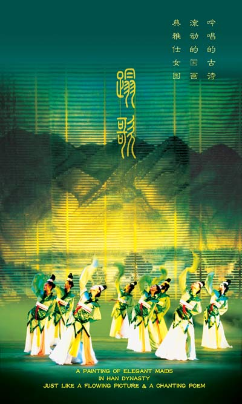
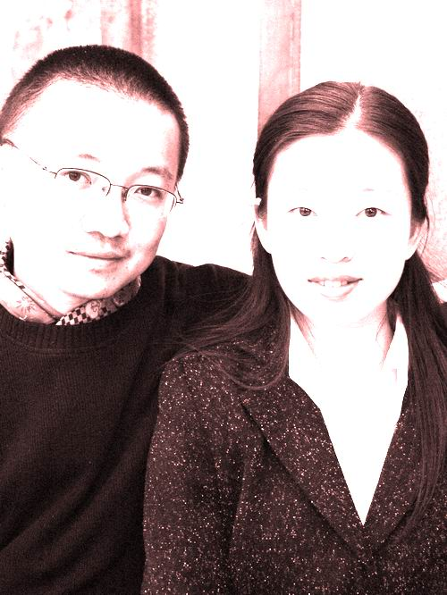
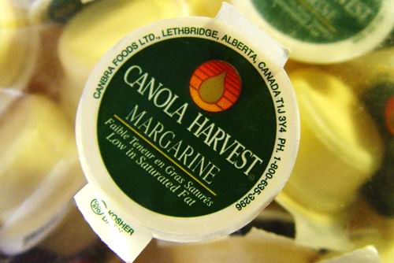

Archives : 2004-11
我们喜欢的东郊 @ Nov 30, 2004
我爱南京的东郊。 除此之外这儿还有什么能让我喜欢？ 妈妈出生的如意里？还是她小时侯生活玩耍的总统府一带？ 这种没有归属感的状况在东郊总能解决的很好。 上个周末和姐姐、外甥女又去了...... 这天，微冷的天，有成群的鸟儿在林间飞翔。
Shot by Sony F717






盘根错节......


两种秋色




遗忘，爱。 @ Nov 27, 2004
和朋友去别的外贸公司看衣服，顺便想买点价廉物美的样品。没想到那个部门的经理居然是前男友Y原来住址的对门邻居。我一点印象都没有，他却认出了我，好象他对几年前的历史比当事人还记忆犹新，面色微红的一连说了好几个“可惜了，可惜了......”
《SEX AND THE CITY》有一集讲CARRY和一个家具设计师相识相爱，CARRY对这种不需要经过磨合就能达成默契和融洽的关系感到困惑，她认为一定有什么问题存在，不然怎么会一点问题和矛盾都没有呢？这就好象快乐有了艰难困苦的体验，才具有令人珍惜和回味的心态。当时我决意离开...也是这种心理的驱使。
有谁能和他们曾经深爱过的人成为哪怕只是说说话的朋友？
他不能，我亦不能。
现实生活中我们彼此遗忘了......

第一次约会我们在天桥上看人来人往，看车水马龙...夜晚的天桥霓虹闪烁。
在黑暗中并肩行走 @ Nov 25, 2004
昆明干燥的气候开始折磨我的皮肤，瘙痒使睡眠越来越糟糕，晚上只好看书直到眼皮塌下，最近看的是周国平的自选集。喜欢有的文章是因为我的思想历程和他有点相象，特别是在文革时读书的感受。现在的年轻人很难想象当时那代人对书籍的渴求是多么强烈。
顺便将他下面这篇文字BLOGGING，作为父母，我们对孩子是不是也应该这样呢？
人们常常说，人与人之间，尤其相爱的人之间，应该互相了解和理解，最好做到彼此透明、心心相印。史怀哲却在《我的青少年时代》中说，这是不可能的，即使可能，任何人也无权对别人提出这样的要求。“不仅存在着肉体上的羞耻，还存在着精神上的羞耻，我们应该尊重它。心灵也有其外衣，我们不应该脱掉它。”如同对于上帝的神秘一样，对于他人灵魂的神秘，我们同样不能像看一本属于自已的书那样去阅读和认识，而只能给予爱和信任。每个人对于别人来说都是一个秘密，我们应该顺应这个事实。相爱的人们也只是“在黑暗中并肩行走”，所能做到的仅是各自努力追求心中的光明，并互相感觉到这种努力，互相鼓励，而“不需要注视别人和脸和探视别人的心灵。”
读着这些精彩无比的议论，我无言而折服，它们使我瞥见了史怀哲的“敬畏生命”伦理学的深度。凡是有着深刻而丰富的内心生活的人，必然会深知一切精神事物的神秘性并对之充满敬畏之情，史怀哲就是这样一个人。在他看来，一切生命现象都是世界某种神秘的精神本质的显现，由此他提出了敬畏一切生命的主张。在一切生命现象中，尤以人的心灵生活最接近世界的这种精神本质。因而，他认为对敬畏世界之神秘本质的人来说，“敬畏他人的精神本质”乃是不言而喻的事情。
以互相理解为人际关系的鹄的，其根源就在于不懂得人的心灵生活的神秘性。按照这一思路，人们一方面非常看重别人是否理解自已，甚至公开索取理解。至少在性爱中，索取理解似乎成了一种最正当的行为，而指责对方不理解自已则成了最严厉的谴责，有时候还被用做破裂前的最后通牒。另一方面，人们又非常踊跃地要求理解别人，甚至以此名义强迫别人袒露内心的一切，一旦遭到拒绝，便斥之以缺乏信任。在爱情中，在亲情中，在其他较亲密的交往中，这种因强求理解和被理解而造成的有声或无声的战争，我们见得还少吗？可是，仔细想想，我们对自已又真正理解了多少？一个人懂得自已理解自已之困难，他就不会强求别人完全理解自已，也不会奢望自已完全理解别人。
在最内在的精神生活中，我们每个人都是孤独的，爱并不能消除这种孤独，但正因为由已及人地领悟到了别人的孤独，我们的内心才会对别人充满最诚挚的爱。我们在黑暗中并肩而行，走在各自朝圣路上，无法知道是否走向同一样圣地，因为我们无法向别人甚至向自已说清心中的圣地究竟是怎样的。然而，同样的朝圣热情使我们相信，也许存在着同一个圣地。作为有灵魂的存在物，人的伟大和悲壮尽在于此了。
（来自乌鸦嘴）
答案 @ Nov 24, 2004

next stop, vancouver
canon powershot s30
Posted by MOKO说话**
echo穿着长长的白色羽绒服，我穿了夸张的毛领大衣，两个人在隐藏着阳光的温暖午后，各自躲在与天气不相称的外套里。相视而笑。
她递过来《清醒纪》，安妮的新书。
当离别近在眼前，我便怂恿了自己放弃购买这本书，已经有那么多带不走的东西，总不愿再多落下些什么。
可是，她还是把它送给了我。
扉页上写着：我们要有一颗淡定的心。
要经历过多少才能明白什么是真正的淡定呢？
答案不在手中，它在旅行箱里。
周末行 @ Nov 22, 2004
离南京60公里左右的大吉温泉度假村。我们包了两栋别墅，共16个房间。每栋别墅每晚3000RMB，另租住主楼公寓式房间若干。那里有温泉泳池、网球、羽毛球场、篮球场，很壮观的桂花树园、卡丁车场、垂钓、桑那浴等等活动的项目和场所，总之适合腐败。据说是私人投资开放的，强！（为了方便带了一个小相机，下面这些图片使用数码相机SONY DSC-P5）
阳光透过百叶窗挥洒进房间，让人怦然心动~~

Silhouette @ Nov 19, 2004
最近一直关注数码单反机，倾向于Canon 20D和Leica，但仍然不确定是否有必要更换目前使用的Sony DSC F717。看着这副图片，F717拍摄的，显然图片经过软件处理，淡紫色的云彩如丝缎般柔滑，舒服的轮廓和构图。仔细考虑，没有想法，没有一定的审美，缺乏生活热情以及想象力的苍白，即使手里端着顶级的机器也无法拍摄出动人的图片。

Sony DSC F717拍摄
夜已深还有什么让你这样醒着 @ Nov 19, 2004
似乎是流行谈论真相、真实、真诚、真挚的时间，似乎是的。
“谁记得一切，谁就感到沉重”，这是爱伦堡的《人·岁月·生活》封底上的话。
媒体上各种人都在给你揭示他/她生命中生活中真实真挚的内容，语调跳动、泪痕斑斑。
每个人都在说起自己深重的爱情，让所有人都感动，除了当事者自己。这些爱情故事，往往只有两个人不相信，就是他们自己。
当他们向你倾诉那些荡气回肠或者痛彻心肺的爱情情节的时候，每一个揭示的细节后面，都隐藏了很多不可为人道的东西。这些东西，其实比说出来的，特别是比刻意说出来的，更能界定主角所诠释的所谓爱情。
这是一个性器官轻易地快速接近，心从相遇那一刻起就开始远离的时代，因此，欢迎谈论爱情，但请慎重，或者说要描述得更巧夺天工一点。拜托了！
无数人喜欢谈论真相，喜欢谈论历史的真相。
只是，能够记录在历史书上的，可能永远不会是真正的真相。
当有一天，所谓的悠长过去中发生的一切，成为时尚，或者成为资本的时候 ，你可以看到无数人，充满激情，满含泪水，或悲戚或兴奋地，向你每时每刻挖掘他们似乎是内心深处无尽的宝藏。
对没有真正经历过，感受过的东西，插着想象的翅膀，凭一腔本无处可用的热血，你的描述，一定是最精彩的，可以打动所有人。
只有那些可怜的人，那些真正经历过的人，才真正明白，其实所经历的那些被他人描述的自己的故事，是那么地痛到无力说，平庸到不能说，或者已经模糊到不知如何说了。
也许无言是对真相最道德的一种尊重。
承受不可承受的无奈，是生命的悲凉，也是精神的高傲。
环境日，赤潮造成了危害，我们所面临的和将面临的，都是艰巨的工作。环境肮脏，需要我们变得干净。
让我们平庸地生活，不谈真实，不谈真挚，不谈真相，不谈真诚，让我们忘记爱情。
让我们做爱吧，不为了繁衍，只为了可以忘记。
(goghs @ June 6, 2004 3:02 AM )

献血 @ Nov 19, 2004
南京已经有些冷了。穿件薄毛衣加一件外套坐在办公室里还是有些凉意，希望天气更冷些，这样整个大厦才会供暖，工作的时候才会舒服些。
今天公司组织无偿献血，早晨上班的时候很多医生等在一楼电梯口，所以整整等了10分钟才乘上电梯。我们部门50多个人只有10个人去献血，女性居多。其中有个同事是乙肝病毒携带者，居然也跑去献血，很不付责任的行为？他自己明明知道，为什么还这么做？希望医生给他验血的时候能验出来。
也看到过有关中国买卖血浆的报道。有些穷困家庭的人出售自己的血浆给医院，也有血头组织这些人去卖血，甚至有些还有黑社会性质，其中一些人患有疾病......可是这些报道出来的时候，他们的血浆已经通过一些血站流转出去了......我们生活在这样的环境里，很令人担心。
东京爱情故事 @ Nov 18, 2004
“刚才看了时刻表，4：48分有车。还有一个小时…… 如果改变心意就来…… 如果不行，我就走…… 最后的请求。”
看“东京爱情故事”是十年前的事了，典型的日本时装偶像剧，俊男倩女们演绎一场轰轰烈烈而终以分手收场的爱情。女主人公赤名莉香用全身心深深的爱着男主人公永尾完治，而那个24岁的大男孩却在爱情中一再游移不定，屡屡伤了莉香的心。终於，在这场“爱—不爱—爱—不爱”的游戏即将在完治的故乡爱媛结束时，莉香最后一次诚挚的请求完治改变心意。
这大概是我高中时代唯一一部连班里最用功的女生都从头看到尾的电视剧，大家从一开始就喜欢上了莉香：穿着蓝夹克、举着牌子在羽田机场大声叫着“永尾完治”的莉香；会带着完治踢铁皮桶鼓励他打起精神的莉香；说自己大皮包里装着爱与希望的莉香；会把鞋子挂在树上占卜天气的莉香；总把泪水留给自己、在人前永远高高兴兴的莉香；即使分了手也要守着自己的诺言去看看完治故乡的莉香。她让我们领会到什么叫“笑靥如花”。所以，十一集连续剧看下来，大家头脑里都只有一个问题：那个长得活像大马猴的小子到底哪根筋搭错了？
女孩子们很一致的喜欢莉香而讨厌她的情敌关口里美小姐。里美长得固然也算不错，然而既没有莉香聪明可爱，更是多了几分做作，一味的小鸟依人，尤其憎恨她每每在三上君那里受了委屈就跑到永尾君那里摆出一副苦脸乞求安慰。这样的女人，软弱、没出息、没主见，再加上自私自利。我们崇拜莉香那股向上的意志，喜欢她觉得“就是不知道会发生什么事才要有精神”；也喜欢她在爱情中的执着和无私；更喜欢她即使失败了也一样可以用如花的笑靥面对人生、认为“爱情是不会白白浪费的” 。
莉香终於没有等到最后一分钟而与完治在人生路上擦肩而过，这个结局当年让我们扼腕叹息。一转眼十年飞逝而去，以赤名莉香为偶像的小女孩们已经长大成人。在多多少少经历了一些爱情的曲折后，惊讶的发现自己往往就是输给了像关口里美那样连吞下一个樱桃核都不敢说的小女人—几分柔弱、几分脆弱，加上几把在男人面前从不吝啬的眼泪。而男人们辜负我们的借口往往正是“你比她坚强”。他们振振有词，“如果有一个女人要受伤害，我只好选择比较坚强独立的那一个，没有我，你也可以过得很好，而她就不行”。而我们，宁可顶着自尊和坚强的外壳一个人躲在角落里哭泣，也没有勇气挨到最后一分钟去看着最后的请求落空。
於是，开始懂得，我们的完治们并不是坏人，他们只是不明白，在爱情中，其实并不存在坚强的女人。
建议把“东京爱情故事” 变成所有男人的必修课。(作者： 吴越)
纵情在一霎那 @ Nov 17, 2004

名牌无逻辑 @ Nov 17, 2004
其实一个人选择体面的职业不过是接受一种社会的既定规范，可能大家会定义你是一个成功的人，会尊重你，但那不过是场面上的事，使用名牌同样的道理，如果你看重这些，你其实在为别人生活。
那么，使用名牌产品呢？ 1、身份、地位的象征； 2、财力的体现； 3、环境职业需要； 4、符合个人审美； 5、品质保证。
广交会结束前后，据说上海襄阳路市场涌现大批外国客人，同事们也笑谈着BOSS、BURBERRY、CATIER等等国际名牌产品在那个市场上的廉价。有时我在想当那些品牌商看到自己的品牌在中国小商品市场上豁然出售的情形，是怎样的一种心情？有没有被打劫的感觉？今年看到一则电视新闻，美国官员指责盗版行为使其每年损失数亿美元，之所以这种现象屡禁不止，认为是当地政府的支持。
在20年前，在韩国可以买到世界各地的各种名牌，足以以假乱真。那个时期属于原始资本积累过程，发展到一定阶段，必须有自己的品牌。从一个品牌的产生，到宣传维护品牌形象，推广市场，建立品牌相应的消费群......法国品牌LV就有两百多年的历史，在法国LV限量发售，不是有钱就可以无限制购买。限制LV包在社会上的流通数量，同时也提升了品牌地位，应对了“物以稀为贵”。而盗版行为利用现成的各种资源谋取财富，不仅是不益之财，还扰乱了市场商业秩序。正如低价竞争必然带来恶性循环。
那么，使用仿品牌产品的因素又有哪些呢？ 1、不同寻常的款式造型，别的品牌没有的； 2、与昂贵的品牌价格相比，仿制品的廉价是相当具有吸引力的； 3、虚荣，虚荣，还是虚荣。
细心观察一下周围的人对于名牌的态度......有人认为使用昂贵的国际名牌，马上就可以气质卓越，连社会阶层、经济收入、社交圈以及生活品味都发生了变更，价格越昂贵对于看着他的人越是一种很有利的暗示。存着这些心理的人中间有多少是根据自己真正的审美去挑选国际名牌下的那些奢侈消费品？而仿制名牌的昌盛恰恰极其直接地讽刺了这种心理，揭开面纱的正是膨胀盲目的虚荣心。不是以为把花里胡哨、昂贵的名牌时尚用品往身上堆积，就改头换面了...难道你不知道品味永远模仿不了？
当人们背着假的LV包，穿着BURBERRY的衣服，戴着CATIER的假表出现在各种场所的时候，我们这个社会是否已经习惯了各种虚假的东西？假商品、假制度、假关怀、假微笑、假爱情、假的文明......这些虚假招摇在生活的各个角落，弥漫我们周围，我们是否真的感到满足？能满足多久？我们自欺欺人，为了什么？与开头那段话同样的道理：......如果你看重这些，你其实在为别人生活。
舞蹈《踏歌》 @ Nov 15, 2004
走出房子时天已经黑了，习惯这种视觉上的黑暗一如习惯在黑暗中放松的自己。

这两日公司排练舞蹈《踏歌》，很美的唐代舞。我以身体欠佳为由逃避活动，但前线歌舞团的老师是我的朋友，又不得不陪着她们一起排练。
《踏歌》动作虽然顺手顺脚，但是从“顺”的动作中寻找韵味，中国艺术十分讲究气韵、精神，抓不住‘神’，仅是猎取到几个‘形’，也仍有可能是风马牛……为什么偏远山森里的苗族妇女走起路来摇摇晃晃？为什么从原始社会一下子跳到社会主义社会的边陲兄弟民族的舞蹈，都是跳的节奏而动作上看不到旋律性？为什么还每每顺拐？还残留着动物形态？总之，难以捕捉的是气韵、精神。当然我的同事们能做到形似就算是成功一大半了。常有人说舞蹈演员四肢发达头脑简单，事实上我认为舞蹈演员反应灵敏，是聪明、坚强懂得配合的群体。
在旁边也跟着学习那些动作，这是我喜欢的舞蹈类型，很美很有韵味。其实，跳舞的时候我们每个人都要认为自己是最美的，所以爱跳舞的我多少有些自恋。
下载欣赏—舞蹈：《踏歌》
君若天上云 侬似云中鸟
相随相依御日浴风
君若湖中水 侬似水心花
相亲相恋与月弄影
人间缘何聚散
人间何有悲欢
但愿与君长相守
莫作那昙花一现…
be careful…... @ Nov 13, 2004
 咖啡音乐和翻腾的泪水
咖啡音乐和翻腾的泪水
带来整夜的失眠
人在情在我却无法看到
想逃又步步蹒跚
我知道我有些兴奋，因为酒精的作用。
无论高兴还是不高兴，如果有机会我都愿意喝点酒以冲淡当时的情绪，事实上从未冲淡过，从未......
大概平日里装模作样惯了，所以酒精能消除紧张和顾虑，以放松的姿态面对真实的自己。那一刻，折叠锡纸飞机，是真实的我，真实的内心。
你说我是个坚强的女人。而，我最大的弱点就是不懂得如何拒绝。
除了自恋需要能力之外，下一步我需要证明的是买什么车的能力。
当一个人心里充满了欲望，雄心勃勃，是不是离变态也不远了？
保佑我们遇见的都是好人，自己也做个好人，即使这世道好人并不怎么走运。
鱼眼镜头里的我 @ Nov 12, 2004
我又胖了，98斤了！
需要解决的问题不是胖的问题，而是抵抗地球引力问题，近期继续去健身会馆，器械比较枯燥但有健美操和瑜珈来调剂。其实到现在还没体会过瑜珈，由于节奏太慢太慢......不适合偶的性格。
偶大哥说他在学游泳，呵呵~~为了他那落枕的脖子？！偶脑海里恶作剧的念头突然窜出来，不好不好...Angie说偶这是欺负老实人~~


芦苇的留言 @ Nov 11, 2004

曾经有一个很爱我的男人说：我们可以试一下情人的关系...
我说:
如果你真正喜欢我，你不会让我做你的情人；
如果我真正喜欢你，也不会做你的情人。我明白生命中有种种不能承受之轻之重之痛，所以我拒绝了某种混乱的生活方式，至今仍过着白粥般清淡的生活，我不知道是否最后也会得到心理医生~~~~
悲喜交加... @ Nov 08, 2004

耳畔那首恋爱时的歌“想问天问大地，还是迷信问问宿命...”
Grace回大陆开会，晚上和他们夫妇二人在王府大街一起吃饭，居然遇见了茶的技术支持Goghs和他的朋友。谈兴越来越浓，酒也越喝越多，基本上6瓶啤酒都是Grace的先生和我灌下肚了。开心啊...再没有人嫌我想法多，再没有人嫌我有病......那是些毫无答案的问题，那是些我无数个日夜为之困惑的问题，那是人生道路上一直找寻缺口突围的问题...“碰碰车”与“自我感受”，城市与自我、人生信仰及宗教信仰的矛盾......
悲喜交加的向他们挥手告别...下次我们Tibet见......你可以选择离开，而我只能选择盲目，即使内心是清晰的，我仍然要回到那个不知道属于谁的现实中，坐上那辆有轨道的车继续痛并快乐着...微晕的酒性在橘色夜灯下灿烂如花，这晚和明天无关。
看到这样一则留言:生命中，你可以选择的是自己，你不可以选择的也是自己。
我们一直生活在这个城市里，什么是我们生存的目的？
行走...... @ Nov 05, 2004

对茶上那篇《模糊》文章最后一段颇有印象：于是明白，原来聪明人不是天生的傻子，他们是先把事情看清楚了，然后模糊了自己的眼睛，做了难得糊涂。若是一开始没有看清楚，到后来模模糊糊，管是睁圆了眼睛还是眯细了眼睛，也终于再不知道真相。
每天早晨强迫自己在7：30分醒来，有时因为毅志力薄弱拖延十分钟左右起床，但凡坐上车到了公司正好赶在上班时间按下自己的指纹。连着三个月没有被扣考勤奖了，内心却在嘲讽着自己。每每望着办公桌上那台运行缓慢的电脑眼前一片模糊，那些工作日里充斥着各种膨胀扭曲的面孔，低级而狰狞的气息四处弥漫，各类标签被贴在脑门上卖弄，一副市井小巷里走出来摆地摊的真实本质。那时一切又都清晰了，看着千万条蠕虫在那些面具下带着激情的欲望每时每刻的搅动，我的内心一片静谧。
悬浮着将近五年...终于可以渐渐落下来，在昼夜交替中寻着一丝微弱的光，开始学习行走。这晚，和他慢条斯理的交谈中，禁不住的泪......
自我认同 @ Nov 04, 2004
昨晚看北京电视台的《海棠依旧》，他说：“你看婚姻就是这样被你们女人拆散的......”
“因为那是男性编剧，男性导演的，他们想要教育女性......”我回答道。
流行小说《廊桥遗梦》也把女性刻画成为了家庭可以牺牲一切的形象。现在我们并不是说女人应该抛弃家庭，和自己邂逅的摄影师一起逃跑。然而，我们需要注意的是，这本书出自一位男性作家之手，他只是在刻画男性心目中完美的女性形象。
她温柔、友善、性感、做一手好菜、自己一无所求、无私奉献、毫无怨言。听听作家罗伯特.詹姆斯.沃勒怎么说，女性本质看来就是要不停做事，默默忍受。
不要误会我们。我们无意贬损那些心甘情愿为了他人牺牲一切的人。但同时我们并不提倡女性献身。早期的女性主义作家西蒙.德.波伏娃这样认为：女性其实很愿意屈服，“以避免去承担真正因生存压力所带来的神经紧张”。
将近半个人生，我满世界地寻找真实的自己。最后我发现，我丧失的是自我的认同和对自己的爱。我被迫从内心最深处去寻找自己真正的性格和一度隐匿的潜能。
看看镜子背后—自觉就是允许自己相信我们能够成功，而且不仅仅是在商海中的成功。获胜者意味着在不同舞台上的成功，包括在你的个人生活、关系、社区、教育和你的休闲生活等方面，就是说要在身体上、心理上、情绪上和精神上关照好自己。
你最后一次驻足欣赏落日，早起约会黎明是在什么时候？........—《The Psychology of Winning》
Let’s leave our heart in the United States @ Nov 03, 2004
上午朋友cheng从MSN上发给我他的网站连接，打开那些图片真让人惊叹，唯美而丰富精致，象雨后的云彩令人陶醉......生活有趣无趣是看个人、看心态。对生活的热情的多少与其工作、地位、收入、学历以及那些形形色色的标签没什么关系。我喜欢这些图片，一种安静的美~~

——建立這個網站,主要記錄著在美國留學生活的點點滴滴,有人說留學生活是無趣的,但對我而言,卻是精彩豐富的... 上次如果沒有把心愛的相機給摔壞了,我想也應該沒有這個網站的建立吧!
這個網站的主要風景在美國的康乃狄克州,也是我學校的所在地!有時候,這裡的同學總是很疑惑的問我,這裡到底有什麼好拍的,但對我而言,這卻是我生活的重心..當自己多一份心去拍它,它就會是最漂亮的吧!!^^ 畢業的時節即將來臨,有時候漫無目的走在生活兩年的街頭 ,這裡彷彿是我另一個家鄉,令人安心... 四季的流轉我抓不住,腦袋裡的回憶永遠最美,帶不走所有的一切,現在的我,只能用照片來留住眼前的不捨,將這美好的回憶,刻印在腦海裡.........
Happy Halloween！ @ Nov 01, 2004

Christine Foodstuff

“Ganola Harvest” Margarine
一直偏爱吃奶油和奶酪食品，傍晚从Christine饼屋买的奶酪蛋糕，上面心型的巧克力口味不会让人失望。购买Christine饼屋食品的习惯是从她的蟹饼开始的。后来也喜欢购买一些奶油切片面包，涂上黄油放在微波炉里转几秒钟，入口那微热的口感~~很不错。
前几日收到别人发给我的Halloween贺卡，不知道是谁？写信去询问个究竟，未见回复。后来，手机免费短信告之今天是万圣节。不管是西方还是东方的节日，无论是你的还是我的生日，大家都愿意抓住每一个机会Happy一下。在欧洲，人们把万圣节看作互相吓唬,讲鬼故事的好机会。于是我们也Happy Halloween！
昨天（10月30日）下午和家人一起去东郊郊游，车多人多，好在那个常去的大草坪只是散落着零星的游客。出门前准备了一些洗净的水果、零食、一次性桌布和面巾纸，为照相机充好电。他安然地坐在沙发上看电视，并等我收拾好这一切然后呼唤他出发。当我们躺在柔软温暖的草地上时，才有浪漫的风拂面而过。浪漫究竟是怎么回事？是不是和摄影一样不过是满足自我感受？